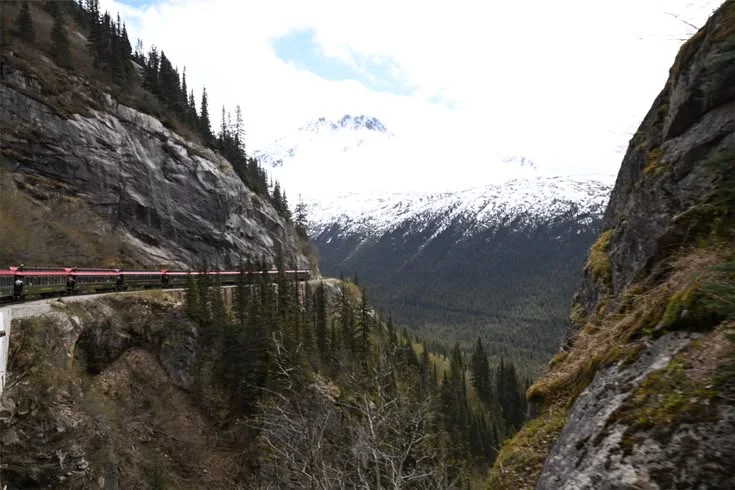
Photos from my travelsPlaces I’ve been.
Places I’ve been.
Moments I kept.
Mountain views, wildlife, and the little things along the way. A collection of my own travel photos.
Explore the photosThe collection
A closer look
16 photographs · Pick a photo to explore.
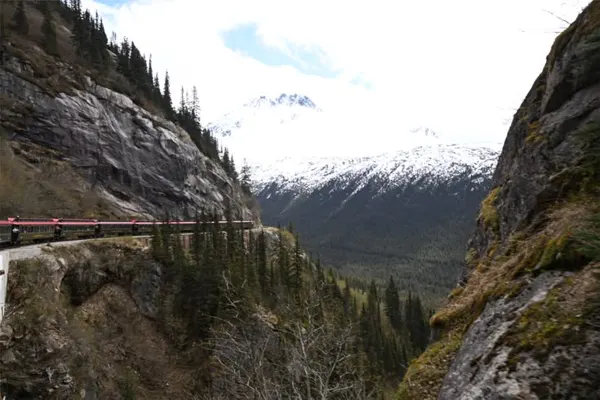
By railWhite Pass & Yukon Route near Skagway
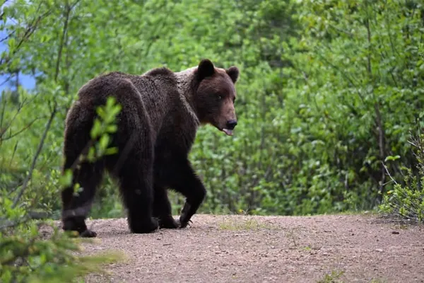
WildlifeCoastal brown bear near Hoonah, Alaska
GardensButchart Gardens in Victoria, British Columbia
 Mountains
MountainsAlpine lake in White Pass, Alaska
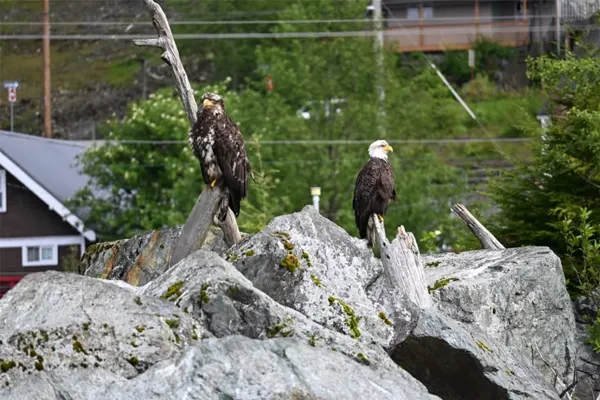
WildlifeBald eagles in Ketchikan, Alaska
 On the trail
On the trailRainforest trail in Juneau, Alaska
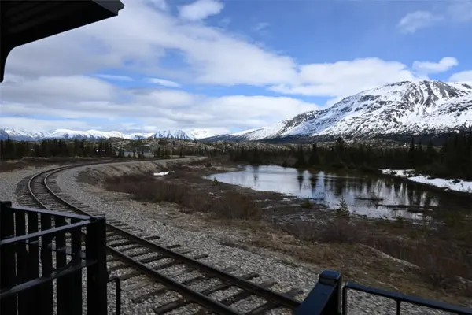
By railWhite Pass train by the water in Skagway
WildlifeCoastal brown bear in Hoonah, Alaska
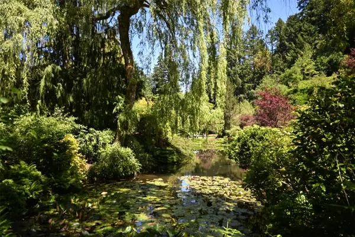
GardensA quiet corner of Butchart Gardens, Victoria
 Mountains
MountainsSnowy mountains in Alaska
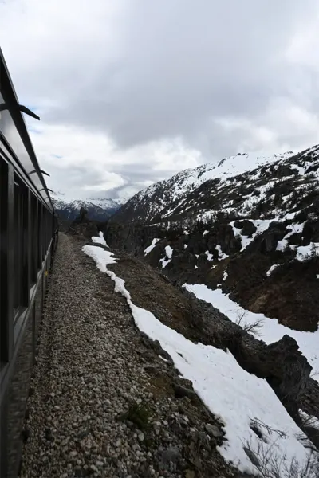
By railSnow beside the White Pass railway
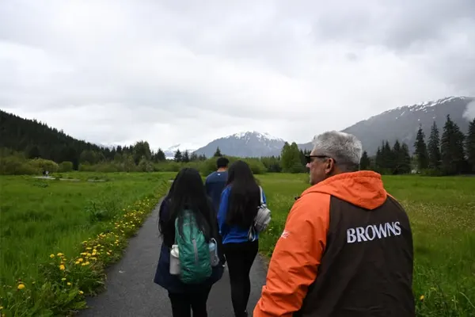
On the trailMountain hike in Juneau, Alaska
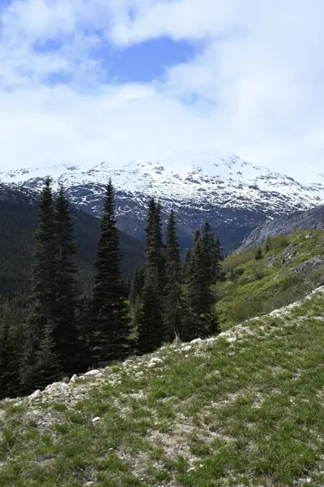
MountainsWhite Pass mountain views, Alaska
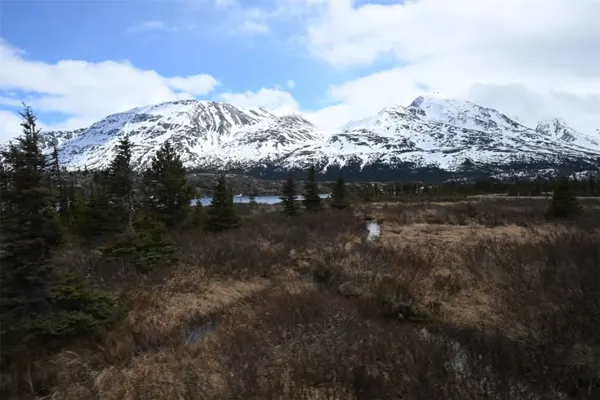
MountainsWhite Pass mountains beneath a blue sky
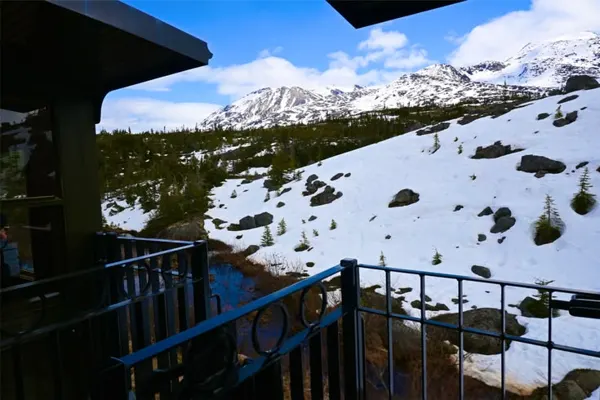
By railSnowy views from the White Pass train
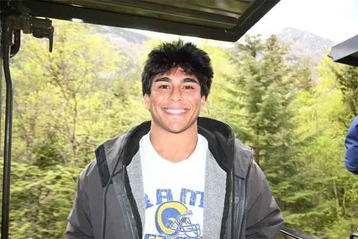
By railRiding the White Pass train in Skagway
Showing 16 photos
Behind the camera
Hi, I’m Constantine.
I like getting outside, finding a good view, and taking photos along the way. This is where I’m keeping the moments from my travels.
From the train in Skagway to wildlife in Alaska, these are photos from places I’ve experienced myself.
Back to the collection